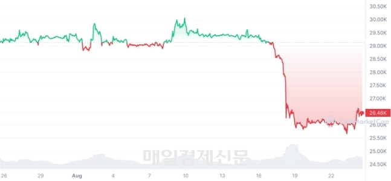
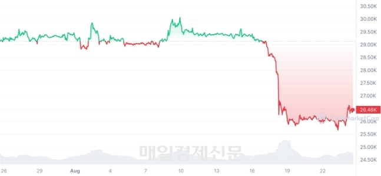

근 두달간 박스권에 갇혀있던 비트코인이 지난 18일 큰 폭으로 하락했습니다. 2만9000달러대에서 순식간에 2만6000달러대로 10% 가까이 떨어진 것입니다. 역시나 국내에서는 제대로 대응하기 어려운 시간인 자정 무렵에 하락했구요. 쉽게 말해 눈 뜨고 일어나보니 10%가 사라져 있더라는 형국인 것이죠.
급락 이후 지금까지 나온 분석을 종합하면 이유는 크게 세가지로 정리됩니다. 먼저 헝다그룹의 파산 보호신청에 따른 중국발 경제 위기 우려를 들 수 있습니다.